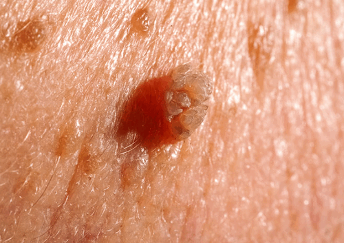

Lậu là bệnh tình dục dễ gặp nhất hiện nay với đối tượng mắc bệnh chính là nam nữ giới đang trong độ tuổi sinh sản. Bệnh lâu có thể lây lan quan nhiều con đường khác nhau và gây ảnh những ảnh hưởng nghiêm trọng đến cuộc sống. Hãy cùng nhau đi tìm hiểu nguyên nhân, dấu hiệu và cách điều trị bệnh lậu để có thể chủ động tránh xa bệnh xã hội này.
Bệnh lậu là bệnh lây truyền tình dục được gây ra bởi một loại vi khuẩn có tên khoa học là Neisseria gonorrhoeae hay gonococcus. Đây là loại vi khuẩn thường xuất hiện ở âm đạo, cổ tử cung, mắt, miệng, hậu môn và nhất là trong đường niệu đạo của nam giới. Nói chung, vi khuẩn lậu thường xâm nhập, sinh sôi và phát triển ở những vùng cơ thể ẩm ướt.
Lâu có thời gian ủ bệnh cực ngắn. Chỉ sau một vài ngày thậm chí là một vài giờ có tiếp xúc với mầm bệnh trên cơ thể chúng ta sẽ có các dấu hiệu đầu tiên của bệnh. Thời gian ủ bệnh trung bình sẽ từ 2-10 ngày tùy theo thể trạng sức khỏe của người mắc lậu.
Sau thời gian ủ bệnh, chúng ta có thể nhận biết dấu hiệu bệnh lậu ở nam và nữ giới như sau:
Bệnh lậu ở nữ giới thường bị nhầm lẫn với các bệnh phụ khoa thông thường do biểu hiện của bệnh không thật sự rõ ràng. Chúng ta chỉ có thể nhận biết dấu hiệu bệnh lậu khi bệnh đã chuyển sang giai đoạn nặng. Các triệu chứng lậu đặc trưng khi này sẽ gồm:
Theo các bác sĩ chuyên khoa bệnh xã hội, các dấu hiệu bệnh lậu có thể xuất hiện ở bất cứ ai chỉ cần có tiếp xúc với nguồn lây bệnh. Con đường lây nhiễm bệnh lậu ở nam giới và nữ giới là giống nhau. Trong đó, có đến 80% người bị lậu là do có quan hệ tình dục không an toàn với người bệnh trước đó.
Do đó, để có thể phòng tránh bệnh lậu an toàn chúng ta cần nắm bắt và tránh xa các con đường lây truyền lậu sau:
Bao gồm quan hệ bằng cơ quan sinh dục, quan hệ bằng miệng, hậu môn mà không có biện pháp bảo vệ an toàn. Ngay cả khi bạn đã quan hệ an toàn bằng bao cao su thì nguy cơ lây nhiễm bệnh lậu là vẫn có thể xảy ra.
Vi khuẩn lậu cầu dễ dàng xâm nhập vào các vết thương hở trên cơ thể, trú ngụ và phát triển tại đó. Do đó, nếu bạn đang bị tổn thương ngoài da, hãy cẩn thận khi tiếp xúc với dịch tiết có chứa vi khuẩn lậu chẳng hạn như nước bọt của người bệnh.
Ví dụ như khăn tắm, khăn mặt, bàn chải đánh răng hay quần lót… Đây đều được xem là vật trung gian có thể tăng nguy cơ lây nhiễm bệnh lậu và các bệnh xã hội khác. Tuy nhiên, khả năng này thường thấp hơn nhiều so với hai con đường lây nhiễm vừa được nêu trên.
Dùng chung dụng cụ y tế như bơm kim tiêm, dao thủ thuật có chứa máu của người bệnh lậu sẽ là con đường lây nhiễm bệnh. Ngoài ra, nếu bạn vô tình nhận hay truyền máu cho người mắc lậu thì nguy cơ bị nhiễm lậu cầu cũng rất cao.
Phụ nữ mang thai nếu bị nhiễm bệnh lậu có thể dễ dàng truyền bệnh sang con thông qua quá trình sinh thường hoặc chăm sóc trẻ nhỏ hàng ngày. Bệnh lậu ở trẻ sơ sinh ảnh hưởng rất lớn đến sự phát triển thể chất và trí tuệ của trẻ.
Các thuốc kháng sinh được Tổ chức Y tế Thế giới (WHO) chọn lựa trong phác đồ điều trị bệnh lậu bao gồm:
Sùi mào gà là bệnh lây truyền chủ yếu qua đường tình dục. Chính vì thế, thật dễ hiểu khi có đến 90% số các ca mắc sùi mào gà được phát hiện có các dấu hiệu bệnh ở vùng sinh dục. Ở nam giới, sùi mào gà cơ thể phát triển ở dương vật, bao quy đầu hoặc bìu tinh hoàn. Ở nữ giới có thể phát hiện sùi mào gà ở môi lớn, môi nhỏ và xung quanh bộ phận sinh dục.
Theo các chuyên gia bệnh xã hội, sùi mào gà là bệnh có tốc độ lây nhiễm cao và khó kiểm soát nhất trong các bệnh tình dục thường gặp. Hiện y khoa vẫn chưa phát minh ra được vacxin phòng tránh sùi mào gà chính vì thế mọi giải pháp điều trị sùi gà vùng kín chỉ mang tính tạm thời, khả năng tái phát vẫn tồn tại.
Do đó, để có thể phòng tránh sùi mào gà vùng kín chúng ta sẽ cần chú ý tìm hiểu các nguyên nhân gây sùi. Theo đó, virus HPV gây sùi mào gà có thể lây lan theo các con đường sau:
Sùi mào gà vùng kín nam giới sẽ xuất hiện chủ yếu ở thân dương vật, bìu tinh hoàn và cả vùng hậu môn. Nếu các mụn sùi xuất hiện ở rãnh bao quy đầu chúng ta cần chuẩn đoán phân biệt với chuỗi hạt ngọc dương vật (dạng bệnh nam khoa lành tính không cần điều trị).
Dấu hiệu sùi mào gà vùng kín ở nữ giới khá giống với sùi mào gà ở nam giới. Tuy nhiên, các tổn thương sùi mào gà sẽ tập trung ở vùng môi lớn, môi nhỏ của âm đạo và có thể lan dần sang hậu môn. Nữ giới cảm thấy vướng, khó chịu ở cơ quan sinh dục và đau nhức khi quan hệ tình dục.
Do cấu tạo vùng kín nữ nhạy cảm và phức tạp hơn nam giới nên các nốt sùi mào gà dễ vỡ gây ra huyết, nhiễm trùng và tổn thương. Vùng kín nữ sẽ tiết dịch nhiều hơn trong thời kỳ phát triển của bệnh sùi mào gà và từ đó gây ra các chứng viêm phụ khoa, hay như tình trạng hôi vùng sinh dục.
Sùi mào gà vùng kín nam và nữ giới cần được phát hiện, kiểm soát và điều trị một cách an toàn. Chúng ta sẽ cần tìm cho mình một giải pháp điều trị thích hợp để vừa có thể đảm bảo loại bỏ nhanh các triệu chứng sùi mào gà và bảo vệ toàn vẹn chức năng sinh lý của cơ quan sinh dục.
Các phương pháp điều trị sùi mào gà truyền thống như phẫu thuật, đốt điện hay đốt lạnh đều có thể ảnh hưởng đến sinh lý của người bệnh. Và sự ra đời của liệu pháp quang động học ALA-PDT đã mang lại cho người mắc sùi mào gà vùng kín một tia hy vọng mới trong việc điều trị dứt điểm sùi mào gà ở vùng kín.
Liệu pháp quang động học ALA-PDT điều trị sùi mào gà vùng kín một cách an toàn dựa theo nguyên lý: sử dụng ánh sáng nhằm kích hỏa những phân tử có tính nhạy cảm với ánh sáng trong mô tổn thương, tạo ra những phân tử oxy hóa rất mạnh có nhiệm vụ phá hủy tế bào đích.
Bệnh giang mai là một trong số những bệnh lây truyền qua đường tình dục đáng sợ nhất, đe dọa nghiêm trọng đến sức khỏe và tính mạng của người bệnh. Nếu không được chăm sóc y tế kịp thời, người bệnh có thể gặp phải nhiều biến chứng nguy hiểm. Dưới đây là tóm tắt ngắn về bệnh giang mai.
Bệnh giang mai là một bệnh nhiễm khuẩn do xoắn khuẩn Treponema pallidum gây ra. Vi khuẩn giang mai xâm nhập trực tiếp vào cơ thể khi quan hệ không được bảo vệ (đường âm đạo, hậu môn hay miệng), qua các vết xước trên da và niêm mạc khi tiếp xúc với dịch tiết từ tổn thương giang mai.
Xoắn khuẩn giang mai còn có thể lây truyền từ mẹ sang con trong thời kỳ bào thai từ tháng thứ 4 trở đi, do xoắn khuẩn này xâm nhập máu thai nhi qua dây rốn.
Do cấu tạo của bộ phận sinh dục ở dạng mở mà người phụ nữ dễ bị lây nhiễm các bệnh tình dục hơn nam giới, kể cả bệnh giang mai. Bệnh giang mai ở nữ giới nếu không điều trị kịp thời rất có thể gây nên những tổn thương tại tất cả các bộ phận trong cơ thể như viêm loét bộ phận sinh dục, phát ban ngoài da, đau nhức cơ xương, thậm chí gây ảnh hưởng đến nội tạng.
Tác nhân gây bệnh là xoắn khuẩn giang mai (Treponema pallidum) do Schaudinn và Hauffman tìm ra vào năm 1905. Xoắn khuẩn này có hình lò xo, bao gồm 6-14 vòng xoắn. Sức đề kháng của xoắn khuẩn này rất yếu, ra khỏi cơ thể nó sống được không quá vài giờ. Trong nước đá, nó vẫn giữ được tính di động rất lâu, ở nhiệt độ 45 độ C nó sẽ bị chết sau 30 phút. Các chất sát khuẩn, xà phòng có thể diệt được xoắn khuẩn này trong vài phút.
Xuất hiện các vết loét màu đỏ, có dạng nông, tròn hoặc bầu dục; không gây đau, không ngứa, cũng không có mủ, dưới đáy vết loét thâm, cứng. Bên cạnh đó, người bệnh còn có thể bị sốt, mệt mỏi, đau nhức xương khớp...
Ở nam giới: Xoắn khuẩn giang mai chủ yếu cư trú ở quy đầu, rãnh quy đầu, miệng sáo, ở hãm, ở bìu, ở vùng xương mu hoặc hậu môn nếu có quan hệ đồng giới.
Ở nữ giới:Các triệu chứng của giang mai xuất hiện ở cổ tử cung, thành âm đạo, môi lớn, môi bé, âm vật.
Ngoài ra, bệnh còn xuất hiện ở các vị trí khác: họng, lưỡi, môi, ở vú có khi ở ngón tay.
Các triệu chứng giang mai giai đoạn 1 thường tự khỏi sau 3 – 6 tuần nên người bệnh thường chủ quan, thờ ơ, bỏ qua thời điểm khám chữa bệnh. Tuy nhiên, các triệu chứng này đang phát triển với nhiều triệu chứng khác.
Sau khoảng 4 – 10 tuần phát hiện sau giai đoạn 1, các biểu hiện giang mai giai đoạn 2 dần xuất hiện: nổi nốt ban đỏ xung quanh lưng, lòng bàn tay, bàn chân... khi ấn vào các vết ban tự mất đi và thấy không đau.
Nhiều trường hợp còn xuất hiện các vết sần, các nốt phỏng nước, vết loét trên da...và dễ lây bệnh cho người xung quanh bởi các vết sần, loét có chứa rất nhiều xoắn khuẩn.
Ở giai đoạn này, giang mai còn có thể gây nóng sốt, mệt mỏi, sụt cân, đau đầu, nổi hạch... Thông thường, sau khoảng 3 – 6 tuần các triệu chứng trên sẽ tự mất đi.
Khi giang mai ở giai đoạn 3 được xem là giai đoạn tiềm ẩn, các triệu chứng hầu như rất mờ nhạt do xoắn khuẩn đang tấn công vào các cơ quan nội tạng.
Ở giai đoạn này, để phát hiện giang mai, người bệnh cần làm xét nghiệm huyết thanh nếu muốn biết bản thân có mắc bệnh hay không.
Đây là giai đoạn nguy hiểm nhất của giang mai khi xoắn khuẩn giang mai đã ăn sâu vào bên trong cơ thể gây đau đầu, mệt mỏi, nổi hạch ở bẹn, nách, cổ, sốt cao liên miên, rụng tóc, đau nhức xương khớp, sút cân,…và gây nhiều biến chứng như:
-Phá vỡ hệ tim mạch, nội tạng, hệ thần kinh, gây bại liệt.
-Tăng nguy cơ đột quỵ, suy giảm trí nhớ thậm chí còn có thể bị động kinh.
-Giang mai ở giai đoạn này gây nguy cơ tử vong là rất cao.
Qua 4 giai đoạn và triệu chứng của từng giai đoạn có thể thấy giang mai vô cùng nguy hiểm và đáng sợ. Vì thế, nên sớm phát hiện và sớm đến ngay các phòng khám chuyên khoa để chữa trị bệnh khi còn ở những giai đoạn đầu để tránh nhiều biến chứng do bệnh gây nên.
Xoắn khuẩn giang mai thường có nhiều trong các tổn thương (săng, mảng niêm mạc, hạch...). Vì vậy bệnh rất dễ lây lan nếu quan hệ tình dục không an toàn với người bệnh. Bệnh lây truyền mạnh nhất là thời kỳ 1 và 2 khi các thương tổn da và niêm mạc chứa nhiều xoắn khuẩn giang mai.
Bệnh chủ yếu lây truyền qua qua quan hệ tình dục không an toàn. Xoắn khuẩn xâm nhập qua da - niêm mạc của bộ phận sinh dục ít nhiều bị xây xát khi quan hệ tình dục sẽ gây bệnh tại chỗ (săng), đi vào máu và lan truyền khắp cơ thể. Các yếu tố làm tăng nguy cơ lây lan là bị nhiễm HIV/AIDS, bị các bệnh hay tổn thương ở bộ phận sinh dục, có hành vi tình dục không bảo vệ (quan hệ tình dục miệng - sinh dục, quan hệ tình dục đồng giới...).
Bệnh giang mai có thể lây do truyền máu (tiêm truyền máu hoặc tiêm chích ma túy mà bơm tiêm không khử khuẩn) và gián tiếp qua các đồ dùng, vật dụng bị nhiễm bẩn.
-Xây dựng lối sống lành mạnh, chung thủy một vợ, một chồng.
-Thực hiện hành vi tình dục an toàn, có biện pháp bảo vệ (sử dụng bao cao su).
-Để phòng bệnh giang mai bẩm sinh cần phải phát hiện kịp thời và điều trị cho người mẹ nếu bị bệnh trong khi mang thai. Cần làm các phản ứng huyết thanh một cách có hệ thống cho tất cả các chị em phụ nữ có thai.
-Khi phát hiện bị bệnh cần đến các cơ sở y tế khám và điều trị ngay, không được tự ý mua thuốc điều trị.